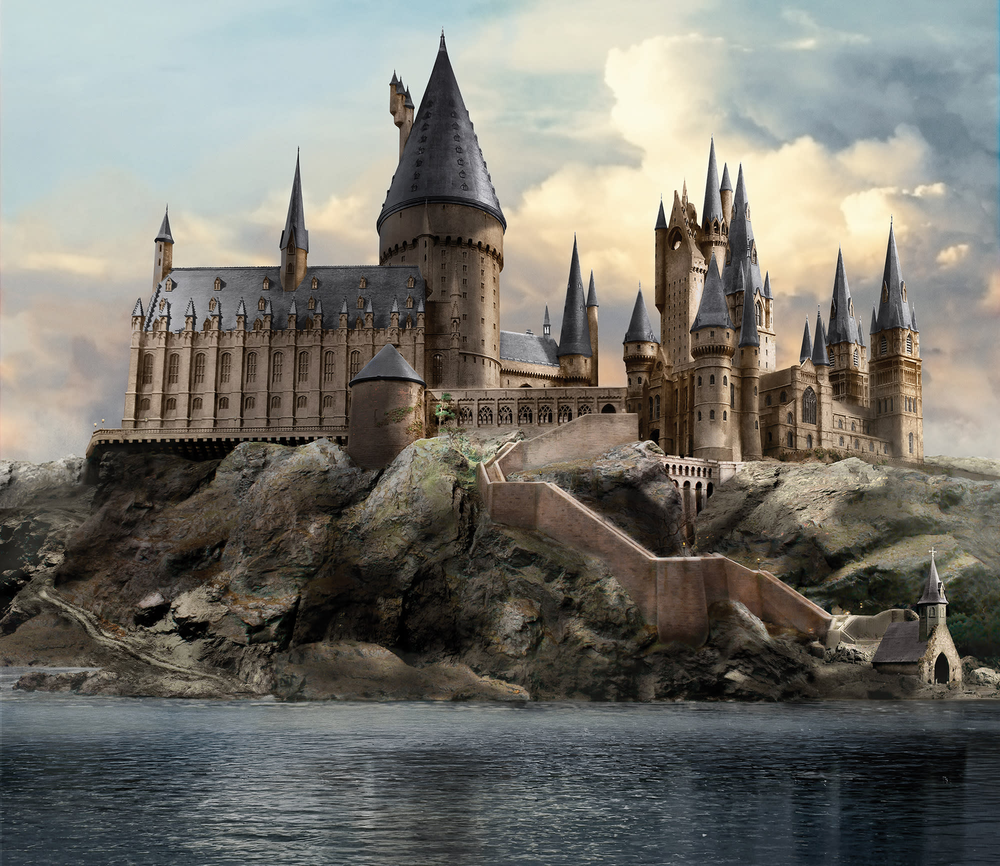

About Hogwarts Castle
Located deep in the Scottish Highlands, Hogwarts castle is concealed by magic from the muggle population. Within the castle, magic makes the castle sentient, allowing staircases to move, room to appear, vanish and more.
The People of Hogwarts
The castle is not just filled with students, such as Harry Potter, Ron Weasley, and Hermione Granger, or teachers like Severus Snape and Minerva McGonagall. The castle is also home to a number of ghosts such as Nearly Headless Nick, The Bloody Baron, and Moaning Myrtle. House-elves also reside in the castle, running the kitchen and maintaining the castle.
The 4 Houses
- Gryffindor: Value courage, bravery, and chivalry
- Slytherin: Value ambition, cunning, and resourcefulness
- Hufflepuff: Value hard work, patience, and loyalty
- Ravenclaw: Value wisdom, wit, and learning
Classes Offered
- Tranfiguration
- Charms
- Potions
- Herbology
- Defense Against the Dark Arts
- Divination
- Care of Magical Creatures
- History of Magic
- Astronomy
Gallery
